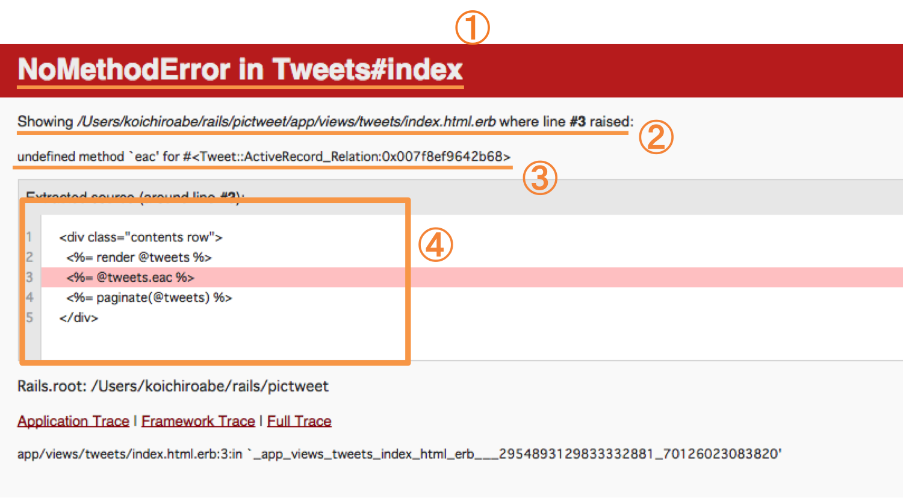

本章では、Ruby on Railsのカリキュラムを進めていく上でよく発生するエラーについて解説します。
作成中のrailsアプリケーションを操作するにはrails sコマンドで開発用サーバーを立ち上げアプリケーションに接続します。
この時、コードが間違ったり正常ではない状態で操作を行おうとするとエラーが発生します。
エラー画面を読めるようになれば、エラーの原因がどこにあるのかを推察することができます。
原因がわかれば、それを正すことも簡単です。エラー画面を読めるようになれば、開発効率がぐんと上がります。
では、エラー画面の読み方を学びましょう。以下の例を見てください。(一例として「NoMethodError」の画面を使用しています)
【例】

①エラーのタイトル
エラーの内容を端的に表しています。上の例は、「NoMethodError」というタイトルのエラーです。「Tweets#index」は、tweetsコントローラーのindexアクションでエラーが起きた、という意味です。
②エラーが起きたコードの場所
実際にどのファイルのコードがエラーを起こしているかを示しています。上の例は、「・・・views/tweets/index.html.erb」の「line #3」、つまり3行目でエラーが起こっているということになります。
③エラーの具体的な内容
エラーの具体的な内容を示しています。上の例は、「eac」というメソッドは<#Tweet::Activerecord_relation・・・>というインスタンスには使えないということになります。
④エラーが起きたコードの表示
エラーが起きた箇所の前後が表示されます。ピンクのラインの部分がエラー箇所です。
エラーには、Rubyの文法エラーとRuby on Railsのエラーの2種類があります。
Rubyの文法エラーとは、例えばif文などのendを書き忘れなどで起こるものです。
Railsのエラーとは、Railsの仕組み、決まりに違反している場合に起こるエラーです。例えば実行されていないマイグレーションファイルがある場合や、ルーティングの設定のし忘れ、viewファイルが無い場合などに起こります。
本章では、Railsの章を学習中に良く出現するエラー文を以下のようにタイトルのアルファベット順に紹介します。
NoMethodError
Pending migration error
Routing Error
syntax error
Template is missing
エラーが起きたらまずは本章を参照して、自力での解決を目指しましょう。
では早速、よくあるエラーとその解決方法をみていきましょう。
Rubyの文法エラー
メソッドを使用されたインスタンスのクラスにそのメソッドが定義されていなかったり、リクエストで指定されたコントローラーにそのアクションが無い場合に起こるエラーです。
【例】
以下の例のように、メソッドを使用するインスタンスのクラスに定義されていないメソッドを使用するとエラーになります。
【例】
1 2 3 |
100.each do |num| #数字クラスのインスタンスにeachメソッドは定義されていないのでエラーになる
puts num
end
|
メソッドを使用する際は、使用されるインスタンスがどのクラスのインスタンスなのかを意識しましょう。
エラーメッセージの後半が「`[メソッド名]' for nil::nilclass」となっている場合、メソッドを使用しているインスタンスがnilになっています。そのインスタンスを生成している箇所を調べてみましょう。
よくあるのは以下の例のような、部分テンプレートでの「'nickname' for nil::nilclass」qエラーです。
【例】
1 |
<%= tweet.user.nickname %> #tweet.userがnilになっているというエラーが出る
|
1つのtweetは1人のuserに属している、という関係の時、tweetsテーブルのuser_idカラムが空だと、tweetがどのuserのものか判断できません。すると、tweet.userはnilになります。そのため、上記のようなエラーになります。
Railsのエラー
実行していないマイグレーションファイルがあると起こるエラーです。マイグレーションファイルに関しては、Rails1-3を参照してください。
【例】
マイグレーションファイルを作成したが、実行するのを忘れている場合があります。
rake db:migrateコマンドでマイグレーションファイルを実行しましょう。
Railsのエラー
リクエストしたルーティングが設定されていないと起きるエラーです。
ルーティングの確認はもちろん、間違ったルーティングをリクエストしていないか確かめる必要があります。
【例】
routes.rbを開き、リクエストしたいルーティングの記述が正しいかどうかを確かめてください。
半角スペースや''(クォーテーション)、/(スラッシュ)などが抜けていないでしょうか？
また、routes.rbでのルーティング記述方法については、Rails1-6を参考にしてください。
エラー文が出ている画面のurl(下図参照)を見ると、実際に送られたパスを確認することができます。
これがroutes.rbで設定したルーティングと違う場合、パスをリクエストした箇所の書き方が間違っている可能性があります。リクエスト元のviewファイルを開き、正しく書けているか確かめましょう。
よくある間違いは以下の例のように、'tweets/:id'という風にroutes.rbの中で「:id」を指定されているルーティングで、viewファイル側のリクエスト箇所でも同じように'tweets/:id'としてしまうことです。
【例】
1 |
<%= link_to '削除', '/tweets/:id', method: :delete %> #よくある間違い
|
「:id」は、「ここに指定したいレコードのidを入れる」という意味なので、数値を入れなければいけません。
例えば<%= link to>タグを使って削除ボタンを作成したいとき、tweetsコントローラーのdestroyアクションへのパスが’/tweets/:id’とroutes.rbで設定されていたとすると、以下の例のように書きます。
【例】
1 |
<%= link_to '削除', "/tweets/#{tweet.id}", method: :delete %>
|
ちなみに、#{}は文字列の中でRubyの式を展開するための記号です。
リクエストは、HTTPメソッドとパスで成り立っています。パスの指定は合っていても、HTTPメソッドが違っている可能性があります。
routes.rbに書いてあるHTTPメソッドと、ルーティングをリクエストする箇所で指定しているHTTPメソッドが合っているか確認してください。
例えば以下のように、link_toタグを使ってtweetsコントローラーのeditアクションへのルーティングを作成しようとしエラーが出たとします。
【例】
1 |
<%= link_to '編集', "/tweets/#{tweet.id}/edit", method: :delete %> #エラー
|
このような場合は、ターミナルから「rake routes」というコマンドを打ってみましょう。すると、以下のような表示になります。
【例】
1 2 3 4 5 6 7 8 9 10 11 12 13 14 15 16 17 18 19 20 21 22 23 24 25 |
Prefix Verb URI Pattern Controller#Action
new_user_session GET /users/sign_in(.:format) devise/sessions#new
user_session POST /users/sign_in(.:format) devise/sessions#create
destroy_user_session DELETE /users/sign_out(.:format) devise/sessions#destroy
user_password POST /users/password(.:format) devise/passwords#create
new_user_password GET /users/password/new(.:format) devise/passwords#new
edit_user_password GET /users/password/edit(.:format) devise/passwords#edit
PATCH /users/password(.:format) devise/passwords#update
PUT /users/password(.:format) devise/passwords#update
cancel_user_registration GET /users/cancel(.:format) devise/registrations#cancel
user_registration POST /users(.:format) devise/registrations#create
new_user_registration GET /users/sign_up(.:format) devise/registrations#new
edit_user_registration GET /users/edit(.:format) devise/registrations#edit
PATCH /users(.:format) devise/registrations#update
PUT /users(.:format) devise/registrations#update
DELETE /users(.:format) devise/registrations#destroy
root GET / tweets#index
tweets GET /tweets(.:format) tweets#index
POST /tweets(.:format) tweets#create
new_tweet GET /tweets/new(.:format) tweets#new
edit_tweet GET /tweets/:id/edit(.:format) tweets#edit
tweet PATCH /tweets/:id(.:format) tweets#update
PUT /tweets/:id(.:format) tweets#update
DELETE /tweets/:id(.:format) tweets#destroy
user GET /users/:id(.:format) users#show
|
薄く光っている部分が、tweetsコントローラーのeditアクションへのルーティングです。左側にある「GET」というのが、指定すべきHTTPメソッドです。
なのでこの場合は、以下のようにHTTPメソッドの指定を書きなおすことで正常に動作します。
【例】
1 |
<%= link_to '編集', "/tweets/#{tweet.id}/edit", method: :get %> #:deleteを:getに変更することで
|
Rubyの文法エラー
Rubyの文法が間違っている場合に起きるエラーです。例えば構文に必要な「end」がなかったり、""(クォーテーション)や「,」(カンマ)忘れなどで良く起こります。
【例】
メソッドの中でif文やeach文を利用しているときに、うっかりendを書き忘れていることがあります。
問題箇所のファイルの中でendの数が正しいかどうかを確認してください。
良くあるのが、以下の例のようにlink toタグなどを使うときに「,」を忘れてしまうパターンです。
【例】
1 2 |
<%= link_to 'テスト' "/tweet/" method: :get %> #「,」が無い
<%= link_to 'テスト', "/tweet/", method: :get %> #「,」がある！
|
Railsのエラー
指定されたviewファイルが無い場合などに起きるエラーです。
【例】
例えば、送信したリクエストがtweetsコントローラーのcreateアクションへのものならば、以下の図の通り
app/views/tweets/以下にcreate.html.erbが必要です。
名前の対応したviewがあるか、また名前の打ち間違いがないか、確認してみてください。
アクションに対応するviewファイルがなくても、アクションの処理の最後にリダイレクトを指定していればこのエラーは発生しません。
もしそのアクションをしても固有のviewを出したくない場合は、リダイレクトを指定しましょう。
 大宅 誠人
大宅 誠人